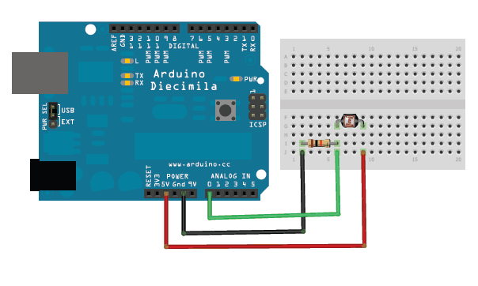

Physical Computing
For this workshop, you'll need to download the Arduino IDE. Then peruse these Adafruit instructions for using a photocell to take analog light measurements, which are then expressed via your machine's serial monitor.
Here's a breadboard view of the simple circuit we'll build (using an Uno): 
And (care of Adafruit), here's the sketch we'll use (which, line by line, I'll walk you through):
/* Photocell simple testing sketch.
Connect one end of the photocell to 5V, the other end to Analog 0.
Then connect one end of a 10K resistor from Analog 0 to ground
For more information see http://learn.adafruit.com/photocells */
int photocellPin = 0; // the cell and 10K pulldown are connected to a0
int photocellReading; // the analog reading from the analog resistor divider
void setup(void) {
// We'll send debugging information via the Serial monitor
Serial.begin(9600);
}
void loop(void) {
photocellReading = analogRead(photocellPin);
Serial.print("Analog reading = ");
Serial.print(photocellReading); // the raw analog reading
// We'll have a few threshholds, qualitatively determined
if (photocellReading < 10) {
Serial.println(" - Dark");
} else if (photocellReading < 200) {
Serial.println(" - Dim");
} else if (photocellReading < 500) {
Serial.println(" - Light");
} else if (photocellReading < 800) {
Serial.println(" - Bright");
} else {
Serial.println(" - Very bright");
}
delay(1000);
}